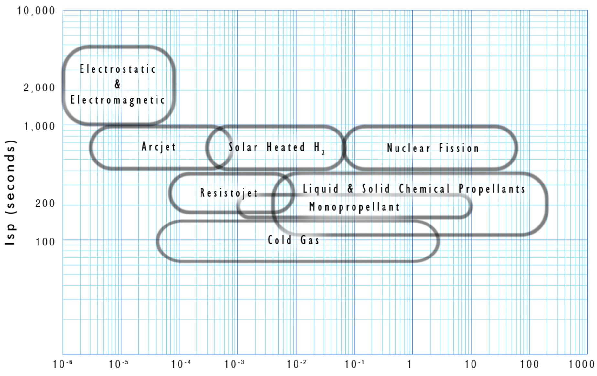

In-space nuclear propulsion
Nuclear propulsion for space exploration is gaining momentum! By the year 2040, there should be at least one rocket design using this method of propulsion. In 2021, DARPA issued a call for the Demonstration Rocket for Agile Cislunar Operations (DRACO). This program serves as a nuclear propulsion in-space demonstrator test. Around the same time, NASA announced a collaboration with the Department of Energy on advanced space nuclear technologies.
Vehicle propellant requirements are indirectly proportional to the fuel efficiency of the engine. People are working on nuclear thermal rockets again because they can obtain double the specific impulse (Isp), the measure of rocket fuel efficiency. By doubling the Isp, you now need half the amount of fuel to complete your journey. For long-duration space travel especially, the advantages of a nuclear-thermal rocket go beyond fuel savings. The trip from Earth to Mars takes half the time, lowering the crew’s overall radiation exposure.
Thrust to weight Ratio (units of earth's gravity g)
In the early 1970s, NASA was working on the Nuclear Engine for Rocket Vehicle Application (NERVA) program. Prototype engines were built and tested that delivered the combination of higher thrust AND higher specific impulse, as seen in the image above. In a series of ground tests, nuclear engines were shown to be reliable and restartable, and could operate for extended periods, including nearly a half-hour of continuous thrust. (That’s an incredible firing duration considering most chemical rocket engines fire for a maximum of 8 minutes!).